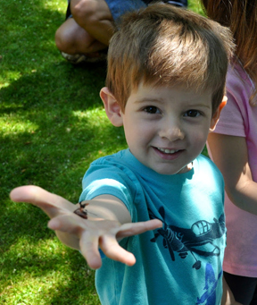

Events Summer-Fall 2012
May 19:
Children's Festival of Flowers
11 am-2 pm
(Rain date Sunday, May 20)
Enter through the gate on Greenwich Avenue, between Sixth Avenue and 10th Street.
A celebration of Spring, flowers, and community. This free annual event gives children the opportunity to enjoy a Spring day on the garden’s beautiful center lawn. Crafts, entertainment and giveaways. Plus DAVE THE WORM GUY demonstrating how worms and kids of all ages can help save Mother Earth. All free.
June 18:
Friends' Garden Party
Become a Friend and receive an invitation to the Friends' Garden Party.
Summer Music in the Garden
Wednesdays,
5-6 pm
A classical musician with a rock-and-roll past, Eric Oxendine, who has played with the likes of Jimi Hendrix and Richie Havens, returns this summer with free classical guitar concerts on Wednesdays, weather permitting, 4:30 to 6:00 pm. SummerMusic In the Garden, July through September. Consider yourself invited to lounge on the lawn and relax.
October 6:
Adopt-a-Pot
Starts at Noon
(Rain date October 7)
The internationally celebrated artist and potter Marianne Yoors will repeat last year's successful benefit this fall. Marianne will stage "Adopt-a-Pot" here at 12 noon on Saturday, October 6 (Rain date: October 7). She and fellow Greenwich House
potters will donate flowerpots and vases, plates and small garden-themed sculptures for the benefit. This is Marianne’s way of giving back, since much of her own work has been inspired by JMG’s leaves and ferns. Do not miss
this opportunity to acquire a unique piece of gardening art and to support the Garden.
October 20:
Harvest Festival for Children
(Rain date Sunday, October 21)
This happy event for children features free kid-size pumpkins and supplies to decorate them on-site, seasonal autumn crafts, goodies and the rare opportunity for city kids to kick leaves and roll off big bales of straw. Plus entertainment sponsored by the New York Public Library.
The Children’s Harvest Festival that brings each Garden season to a close just gets better each year. Last year, village kids decorated pumpkins provided by Citarella, enjoyed an awesome puppet show produced by Jefferson Market Library, and a painting project conducted by Kids at Work. Garden volunteers and the NYC Law Enforcement Explorers Troop, Post 2206 at the 6th Precinct helped each frolicker realize their artistic vision.
|